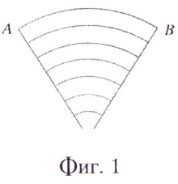

Беседа 2324 от 3877 · Беинса Дуно
Насока отвътре
„Отче наш“
Прочете се резюмето на темата „Свойства на глаголите“.
Сега пишете върху темата „Положителни и отрицателни състояния“.
Какво разбирате под едно положително и отрицателно състояние? Самите думи положително и отрицателно са разбрани, но да имате една представа за положителното. Една свещ, която е запалена и гори, в какво състояние е? (Положително.) − А която не гори? (Отрицателно.) Добре. Имате два хамбара, единият пълен с жито, а другият е празен. Пълният какъв е? (Положителен.) А който няма нищо? (Отрицателен.) Представете си, че имате едно житно зърно, което расте, а другото не расте. Едното има условия да расте, а другото няма условия да расте. Това, което расте, какво е? (Положително.) Сега как бихте представили едно положително число (фиг. 1).
Казвате някой път, че обикновеният човек е положителен. Тогаз гениалният какъв е? Глупавият какъв е? (Отрицателен.) Талантливият какъв е? Значи обикновеният човек, гениалният и талантливият са степени на положителността.

Аз искам да ви наведа на тези неща да мислите. Аз не искам отрицателни неща, но казвам: В сегашните условия културата и всички вие минавате по един път, който ви спъва. У всинца ви има желание да станете гениални. Казвате: „Да е роден човек гениален.“ Няма някой, който да не е роден гениален, само че гениалният човек знае, че е гениален, а пък вие сте гениални и не знаете, че сте гениални. И като ви обяснят, вие казвате: „Не ми говорете по това, аз съм един обикновен човек.“ Не го съзнавате това.
Най-първо това, с което се определят гениалните хора, това са външни страни. Има една външна страна на гениалния човек. Гениалният човек и при най-силните положения, и при най-слабите прави еднакво усилие. За да обясня това, допуснете, че ви говоря за музиката. Музиката има практическо приложение. Хората сега не го употребяват. Музиката се употребява в религията, за да добият хората известно настроение. Музиката се употребява в обществото при известни условия, но музиката не е турена като един възпитателен метод, като един вътрешен подтик. Някой казва: „Какво ще ходя да му пея сега?“ То е вътрешната страна на музиката. Да допуснем сега, че вие имате разположение да работите. Представете си, че сте един ученик от седми клас, но нямате разположение да учите. Искате да учите, но във вас има едно неразположение, не ви се учи. Питам тогаз: В дадения случай какво трябва да правите? (Едно усилие.) Да допуснем, че не ви се работи, не ви се яде, не сте разположен да ядете, а пък е необходимо да ядете. Щом имате едно неразположение за ядене, какво трябва да правите?
Един българин се качил на един кон. Той имал хубав кон. Отишъл в кръчмата и се напил. В пияно състояние, като излизал от кръчмата, турил си крака на коня и вместо да си тури лицето към главата на коня, обърнал си лицето към опашката на коня. Върви конят, а той се клати и си казва: „Какво му стана на коня?“ Седи той и не може да разбере, че посоката не е добра; усеща, че е станало едно превръщане на нещата в света. Хваща опашката на коня и казва: „Тази работа съвсем се е променила, шията му съвсем се е изтънила. Божия работа!“ На едно място конят се спъва и човекът пада и се удря. Тогава съзнанието му идва и той си казва: „Какъв съм бил будала, че да се кача на коня и да гледам към задната му страна.“ Питам: От какво произлизат тези състояния? От едно чувство да иде да си пийне повече винце в кръчмата. Винцето е било по-силно от него и го накарало да седне с лице към задницата на коня. Смешно е това положение. Но това често става с хората. На някой човек не му вървят работите: качил се е с лице към задницата на коня. Казва: „Чапрашък1 е тази работа.“ Той не се е качил както трябва. Започва разни теории, казва: „Докажи ми, светът не е направен, както трябва.“ Разни теории почват.
Вие казвате: „Кога ще се уредят работите?“ Мислите ли, че работите в света не са уредени? Щом не си взел едно правилно положение в съзнанието, ти виждаш, че работите в света не са уредени.
Най-първо на сегашното възпитание на хората трябва да се даде една нова насока отвътре. Когато се говори върху това, трябва да се знае, че е много мъчно да се даде насока на човека отвътре. Допуснете сега, че нещо в училище не ви върви, паметта ви не е добра. Да кажем, че всичко е в паметта. Не може да помните. По пет пъти прочитате урока си и едва го запомняте тук-там. Едвам скърпвате нещата. Учителят ви изпитва и вие минавате за невежа. Не че сте невежа, не сте невежа, но не може да помните. Учили сте, разбирате предмета, но речете ли да се изкажете, не можете да се изкажете, не помните. В такъв случай какво трябва да правите?
Каква беше мисълта. Отде започна обезсърчението на човека? Докато не знае, човек не се обезсърчава. Обаче, като знае работите, се обезсърчава. Вие сега мислите, че гениалните хора не се обезсърчават. Много се обезсърчават. Вие имате една представа за гениалните, че излизат от рамките на обикновеното. Вие сте прави, но вие туряте на гениалните хора едно състояние, което е на боговете. Вие правите гениалните хора равни на боговете. Гениалните хора много лесно се обезсърчават. Той е като човек, който пада на тръни и се убожда на твърда шубрачка. Като си отива оттам, пада на втора шубрачка, после на трета, хваща се и, като се хване, мисли да излезе навън. Гениалните хора използуват противоречията. Те имат големи невъзможности. По-големи невъзможности от тези, които среща гениалният човек, няма. Гениалният човек е изпратен да изправи гърбиците на много глупави работи. Докато ги изправи, го държат отговорен. Казват: „Колко глупав човек!“ Когато може да изправи тези погрешки, считат го за гениален. У гениалните хора има едно свойство. Когато гениалният човек се обезсърчи, никога не си навежда главата. Като се намира в най-голямо противоречие, той ще си вдигне главата. Тогава всички хора, които срещаме и които са вдигнали главите си, са все гениални; а всички онези, които спущат главите си надолу, считаме ги за глупави. Глупавият си навежда главата надолу. Има два вида гениални: единият мисли какво да направи, а другият мисли как да се освободи. Онзи, който си е навел главата, мислите ли, че е гениален? Той е натоварен, мисли как да се освободи. За пример яви се един гениален крадец, не могат да го хванат. Разтичат се всички детективи и стражари, шум се вдига. Че този, който краде, не е ли гениален? Вие мислите, че крадците не са гениални. (Гениалният човек е този, който има идея да направи нещо добро.) Представете си един човек, който има жажда за знание. Тук иска книги, там иска книги, не му дават книги от библиотеката. Той иска една книга, не му я дават, понеже я считат за свещена. Идва му на ума да я открадне. Открадне една книга. От кого се извършва кражба? − От гениалния. Само гениалният може да открадне. Питате: „Като хванат един гениален човек за кражбата на книгата, как ще го накажат?“ Какво наказание му турят? Някои момци отиват да крадат дини, отиват с чувал. Като ги хване пъдарят, туря чувалите на гърба им и ги кара с пълните чували, които са откраднали, да вървят. Питам в дадения случай: Къде е погрешката? Вие казвате: „Да не краде човек.“ Де е погрешката: в онзи, който е крал, в онзи, който го кара да носи, или в онзи, който е сял бостана? Трима виновати хора има. Единият, който е сял бостана, вторият, който го пази, и третият, който отива да краде. Кажете ми сега кой е най-виноват от тримата? Който сее в земята, произвежда житото и го продава; който мели житото и го продава за хляб и третият, който яде хляба − кой е най-виноват от тримата? Вие всякога считате, че онзи, който яде хляба, е виноват. Така е. А другият, който мели житото и го прави на хляб? Онзи, който сее житото, няма ли вина? Ще направите един малък превод.
Вие някой път мислите право, но някой път търсите вината там, дето не е. Според мене причината трябва да се намери там, дето започва едно явление, и там, дето свършва. Всяко явление има две силни точки. Имате точката А и точката В. Това е проявление от точка А до точка В. Този момент А, дето явлението започва, какъв е? − Подбудителната причина. Да допуснем, че имате подбудителната причина да пеете. Вие сте певец. Каква е вашата подбудителна причина да пеете. Първата причина може да е, че вие искате хората да знаят, че пеете, че сте певец. Втората причина може да бъде, че вие имате нужда от хляб и пари, и вие пеете. Каква може да бъде третата причина? От любов към пеенето. Имате три момента. Да кажем, че вие сте много амбициозен човек. Какво разбирате под думата амбициозен човек? Какво е лошото в амбициозния човек? Ако един човек е амбициозен, а друг не е амбициозен, каква е разликата? Ние можем да употребим тази дума, но някой път си служим с думи, които не са разбрани. Ако слушате един музикант, един певец, той ще ви повлияе, но от разни гледища ще ви повлияе. Всички хора не се повлияват еднакво. Представете си, че има огън. Туриш в огъня известен предмет, той се запали и трудно гори. Това е едно състояние. Другият предмет, като го туриш на огъня, той се стопява. Имате две състояния. Единият предмет гори при известни условия, а пък другият се топи. Каква е разликата между горенето и топенето. Предметът изчезва вече, не може да се използува по-нататък, а при топенето предметът си остава. Ако турите мед на огъня, вие го имате все таки, имате какво да вземете. Но ако изгорите един предмет на огъня, в края на краищата какво ще вземете? − Нищо. Това са два начина. Искате някой път да живеете само за да се освободите от някое голямо терзание. Какъв метод трябва да употребите − топене или горене? Искате да се освободите от някоя голяма беля, с кой метод ще си послужите − с топене или с горене? (С горене.) Често в обикновения език употребяват израза: „Топи се този човек.“ Или казват: „Гори този човек.“ Кое е по-хубаво: да гори или да е топи? Горенето образува дим, а пък топенето образува влага. Горенето образува индустрията, а пък топенето образува земеделие, дава плодове. Кое е по-хубаво сега: дим ли да имаш или влага? Трябва да се преведе сегашното състояние в света. Вие не може да прогресирате в света, докато съществуват онези процеси,
Всичката погрешка е, че вие мислите, че животът не е такъв, какъвто трябва. Но това е съвсем субективно схващане. Вие мислите, че съвременното общество не е уредено така, както трябва, но това е едно субективно схващане. Богатите хора казват, че животът е много добре уреден. Питайте управляващите и те ще кажат, че животът е уреден добре. Сиромасите и тия, които не управляват, казват, че животът не е уреден. Вие разправяте за окултизъм, за знание, за всичко това. Каквото и да правиш, пипаш само джоба. Като пипаш парите си, тогава се дава подтик на знанието. Щом нямаш знание, нямаш подтик. Но парите − това е общото усилие на всичкото човешко съзнание. Парите са един резултат на неговата динамическа сила. Съвременните пари, както сега са направени, това са динамически сили на ред условия. Както дърветата, които растат, от тях зависи щастието и животът на онези хора, които живеят върху тях.
Та парите са резултат на общото усилие на човешкото съзнание, от което всички трябва да се ползуват. То е разменната монета на известен труд. Събрани богатства има, но те се дължат на много хора, които са работили. Уредили си държавата и казват, че тази държава е богата. Но това богатство се дължи на работните хора. И като не разбираме закона, искаме изведнъж да бъдем богати. Да ви приведа един пример, който природата употребява. При един богат човек вие трябва да бъдете много способни и много работливи; ще видите тогава, че той ще ви ангажира на работа. Този начин зависи от вашата способност, от способността, която имате. Другият начин е онези синове, които са родени от богатия човек, имат голяма привилегия − родените или приведените. Аз ви давам нов начин за разсъждение. Казвате: „Той е син на богат човек.“ Но вие не знаете какво нещо е това. Онзи, роденият син на богатия човек, е първокласен невежа, нищо не знае и го приемат. После ще го учи баща му, ще харчи пари за него и след години този син на богатия ще стане учен. А пък онзи, когото богатият приема на работа, той е способен, без да е учен.
Богатият казва: „Аз имам доста будали при мене, други будали не приемам. Ако е будала да си върви.“
Сега ви турям такава форма, за да разберете идеята. Богатият счита за благословение, че Бог му дал деца. Той си представя състоянието на сина и дъщеря си, че ще станат учени, способни, ще се издигнат. Но слугите, които идват, той иска да бъдат хора способни.
В света има два начина: или трябва да започнете като деца, като будали, или трябва да започнете като слуги. Две положения има. Тогава, ако започнете като будали, ще кажете: „Татко!“ Ще се учите да бъдете много мекички. Ако искате да започнете като слуги, тогава ще бъдете под команда. Ще ви казват: това ще направите, онова ще направите. Това са две състояния, с които трябва да започнете. Те са две основни неща. Някой път казвате: „Много голям будала съм, съвсем неспособен съм.“ − Не, не сте съвсем неспособни, силни сте, но не сте богати. Баща ви е способен. Щом вие усещате, че сте неспособен, пратени сте в някоя богата къща и в бъдеще ще се проявите. А пък щом се усещате способен, вие вече сте слуга. Противоречието произтича оттам, че вие разменяте двете състояния: туряте способността на слугата върху синовете и туряте състоянието на синовете върху слугата. Обръщате с главата надолу нещата.
Когато онзи българин се качил с лицето към задницата на коня, казал, че светът не е направен, както трябва. Да допуснем, че три деня сте гладували, какъв начин има, за да се справите с живота? Представете си, че вие сте един първокласен честолюбив певец. Когато пеете, искате салонът да е голям, да е хубаво отоплен, да има реклами. Вие не сте дали още концерта. Но представете си, че изпаднете в едно стеснено положение. Какво трябва да правите? Хората не знаят, че сте певец. Да просите не искате, да пеете ви е срам. Да просите ви е срам и да пеете ви е срам. А пък имате нужда, имате глад, който ви заставя. Какво трябва да правите тогава? Олга, какво ще направиш ти, ако си в такова противоречие? Да не дава Господ такава работа, но представете си, че Господ ви е дал. Какво ще правите? − (Ще пея.) Като се изправиш, тогава ще пееш. След като пееш, тогава работата ще се свърши. Щом се намериш в едно противоречие, ще кажеш: „Ще пея, ще работя, ще вървя напред.“ Те са неща под един и същ знаменател. Думата „пея“ в този случай значи следното: имаш една дарба, която в даден случай може да употребиш. Хубаво, колко души има между вас, които знаят да пеят? (Класически песни не знаем.) Вие оставете това класическо пеене. Аз бих ви обяснил какво нещо е класическото пеене, но нищо няма да ви ползува. Каква е отличителната черта на пеенето? Ти никога не може да заставиш един професор да пее. Малко професори има във външния свят, които пеят.
Ние се спряхме между две точки, нали? Едната ние наричаме начало, основна точка, отдето човек започва своето движение, а пък другата − завършва своето движение. То е съдържанието на този процес За пример изкарвате едно житно зърно от хамбара, хвърляте го на нивата, започва разлагане, гниене. Следната година туряте събраното жито в хамбара. Колко време се минава? Ако сеете житото есенно време, колко време се минава, за да влезе житото пак в хамбара. Ако го сеете по Димитровден, кога го жънете? Към Петровден. В август почвате да вършеете. Към края на август житото влиза в хамбара. Сега престъплението на нещата седи в следното: всяко нещо, което човек взима от природата, считате го за престъпление. Представете си, че седите под едно дърво и не искате да прегрешите от човешко гледище. Иска ти се една ябълка, казваш: „Дано падне някой плод!“ Колко време трябва да чакате, докато падне плодът? Вие казвате, че не трябва да чакате. Ако вземете и откъснете, ще се намерите в затвора. А пък ако падне, ще ядете и ще вървите по пътя. За всяка работа, която правите, ако мислите, няма престъпление. За всяка работа, която правите и не мислите, има престъпление. За всички работи, които човек е направил, той е виновен, ако не мисли.
Вие, сиромасите хора, хора, създадени от Бога, искате да хвърлите вината върху природата, че нищо не ви е дала. Вие не разсъждавате, в това няма разсъждение. Казвате: „Какво можем да направим? Пари нямаме, власт нямаме, това, онова нямаме. Тогава какво можем да направим?“ Мисълта ни не трябва да дойде до такова едно положение. Всички вие сте натоварени с много стари идеи. Трябва да ви разтовари човек напълно, за да се освободите.
Нали някой път земеделецът сее една нива, но там може да има цигански тръни, магарешки тръни, паламида и, като израснат, много мъчно се жъне нива с паламида. Жънали ли сте една нива, обраснала с паламида? Много е мъчно. Който е жънал, той знае. Във вашите ниви има много паламида, в нивите на живота ви, като ги жънете. Но това положение е повторно, то е произлязло от самите хора.
Сега ще ви дам едно правило, може да го упражнявате. Когато видите, че на един човек му върви, че му е тръгнала работата, не съжалявайте, че вашите работи не са тръгнали. Гледайте да се запознаете с хора, на които работите са тръгнали и да ви е приятно. Ако на вас работите не вървят, не търсете хора, на които работите не вървят като на вас, но търсете хора, на които работите върват. И като ви разправят, че работите им вървят, да ви е приятно. 10 − 20 души като ви разправят така, ще се измени вашето състояние. Ще ви дам друго едно правило. Всеки един от вас трябва да има по един пчелен кошер. Щом се обезсърчите, за половин час ще отидете при кошера, ще седнете и ще си турите ухото да слушате бръмченето на пчелите. След това ще си отидете. През лятото ще направите това. Като отидете там, ще се роди някоя хубава идея във вас. Ще мине обезсърчението. Или когато цъфтят дървета, ще ставате сутрин да ги наблюдавате. Те дават идея, опит за мислене, да мислите. Хубаво е да гледате пчелите. Хубаво е да гледате една река как тече. Вие не се отказвайте да гледате една река как тече, понеже това дава подтик. Това е животът, който се проявява. Казваш: „Аз да гледам реката как тече!“ Не целия ден, 10, 15, 20 минути. И като наблюдавате реката, ще се върнете съвсем ободрен. И като влезете в една градина, дето цъфтят растенията, ще се върнете съвсем ободрен. И ако влезете в един пчелин, дето пчелите са хубаво подредени, пак е същото. Природата възпитава сега хората по един положителен начин. В съвременните градове хората са лишени от тези подбудителни причини. Земеделците имат тези условия. Българите се обезсърчават някой път по единствената причина, че няма кой да сее нивите. Някой има 10 декара двор. Казва: „Кой ли ще ги чака сега плодовете!“ Не иска да сее, а пък, като види плодовете на някого, казва: „Много му е родила крушата.“
По някой път ви гледам да казвате: „Не ни върви, толкоз години се занимаваме с окултизъм.“ Вие изучавате окултизма като лотариен билет. Помнете едно: окултизмът не е лотариен билет. Такъв окултизъм го има на Запад, във Франция се явява. Аз съм привеждал този пример. Един учител по окултизма се явил, за да покаже чудесиите на окултната наука. Но трябвало да му се дават пръстени, огърлици и други скъпоценности. Това са видни парижани, от най-висшето общество, които се подвеждат. Той се качва на експреса. Той бил окултист, скочил от трена и после трябвало детективи да го търсят.
Щастието на човека е вложено в самия него. Искам само да ви покажа, ключа да ви дам, отдето може да отворите вашето щастие. Да знаете отде да започнете. Единствената мъчнотия е, че вие не знаете де ще турите вашето щастие. Трябва да ви се даде този ключ. Следния път ще ми напомните да ви кажа, понеже слънцето изгря. Слънцето ми казва: „На тези хора после ще им кажеш къде е щастието, а пък сега да вървят на работа.“ Следният път ми напомнете да ви кажа къде е щастието на човека.
Сега вземете за упражнение до следния път следното: всеки един от вас да може да вземе вярно в първата мажорна гама горно до и долно до, само до.
Само светлият път на Мъдростта води към Истината. В Истината е скрит животът.
24 лекция от Учителя, държана на 12 април 1935 г., София, Изгрев.
(Според каталога на Лалка Кръстева, лекцията е изнесена на 5 април 1935 г.)
----------------------------------------------------------------------
1 Забъркана, заплетена, неясна (остар.) (б. р.).